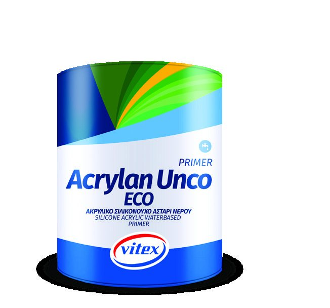

Силиконовая · микропоровая, эко
Acrylan Unico Eco
Сертифицированная экологичная микропоровая силиконовая грунтовка. Глубоко проникает и укрепляет основание, готовит любую поверхность под краски на водной основе.
- Расход 14–18 м²/л
- Сушка ~45 мин
- Полупрозрачная